Slayer
Biography
Slayer was an American thrash metal band from Huntington Park, California.
The band was formed in 1981 by guitarists Kerry King and Jeff Hanneman,
drummer Dave Lombardo, and bassist and vocalist Tom Araya. Slayer's fast
and aggressive musical style made them one of the "big four" bands of
thrash metal, alongside Metallica, Megadeth, and Anthrax. Slayer's final
lineup comprised King, Araya, drummer Paul Bostaph (who replaced Lombardo
in 1992 and again in 2013) and guitarist Gary Holt (who replaced Hanneman
in 2011). Drummer Jon Dette was also a member of the band. In the original
lineup, King, Hanneman and Araya contributed to the band's lyrics, and all
of the band's music was written by King and Hanneman. The band's lyrics
and album art, which cover topics such as murder, serial killers, torture,
genocide, politics, theories, human subject research, organized crime,
secret societies, mythology, occultism, Satanism, hate crimes, terrorism,
religion or antireligion, Nazism, fascism, racism, xenophobia, war and
prison, have generated album bans, delays, lawsuits and criticism from
religious groups and factions of the general public. However, its music
has been highly influential, often being cited by many bands as an
influence musically, visually and lyrically; the band's third album, Reign
in Blood (1986), has been described as one of the heaviest and most
influential thrash metal albums.Slayer released twelve studio albums, two
live albums, a box set, six music videos, two extended plays and a cover
album. Four the band's studio albums have received gold certification in
the United States. Slayer sold 5 million copies in the United States from
1991 to 2013, according to Nielsen SoundScan, and over 20 million
worldwide.The band has received five Grammy Award nominations, winning one
in 2007 for the song "Eyes of the Insane" and one in 2008 for the song
"Final Six", both of which were from the album Christ Illusion (2006).
After more than three decades of recording and performing, Slayer
announced in January 2018 that it would embark on a farewell tour, which
took place from May 2018 to November 2019, after which the band disbanded.
Discography
| 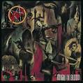 |
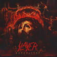 |
.jpeg) |
.jpeg) |
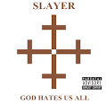 |
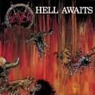 |
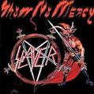 |
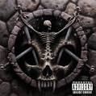 |
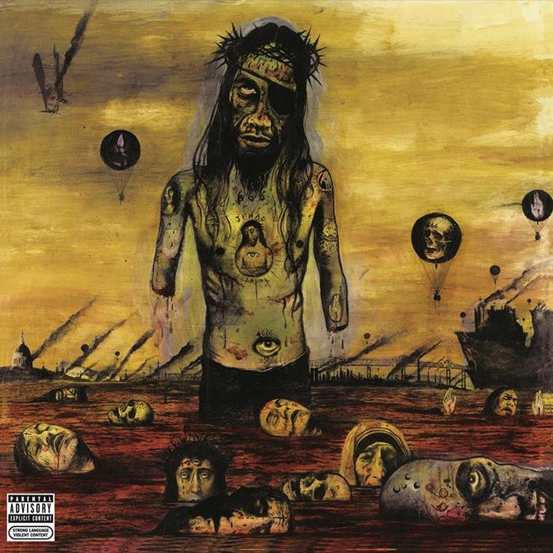
|
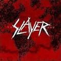 |
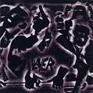 |
|
| October 7, 1986 |
September 11, 2015 |
July 5, 1988 |
October 9, 1990 |
September 11, 2001 |
March 1985 |
December 3, 1983 |
October 3, 1994 |
August 8, 2006 |
November 3, 2009 |
May 18, 1996 |
June 9, 1998 |
| Reign in Blood |
Repentless |
South of Heaven |
Seasons in the Abyss |
God Hates Us All |
Hell Awaits |
Show No Mercy |
Divine Intervention |
Christ Illusion |
World Painted Blood |
Undisputed Attitude |
Diabolus in Musica |
| 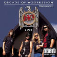 |
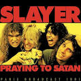 |
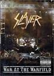 |
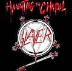 |
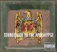 |
 |
| October 22, 1991 |
April 5, 2019 |
July 29, 2003 |
August 4, 1984 |
November 25, 2003 |
October 12, 2010 |
| Decade of Aggression |
Praying To Satan |
War at the Warfield |
Haunting the Chapel |
Soundtrack to the Apocalypse |
The Vinyl Conflict |